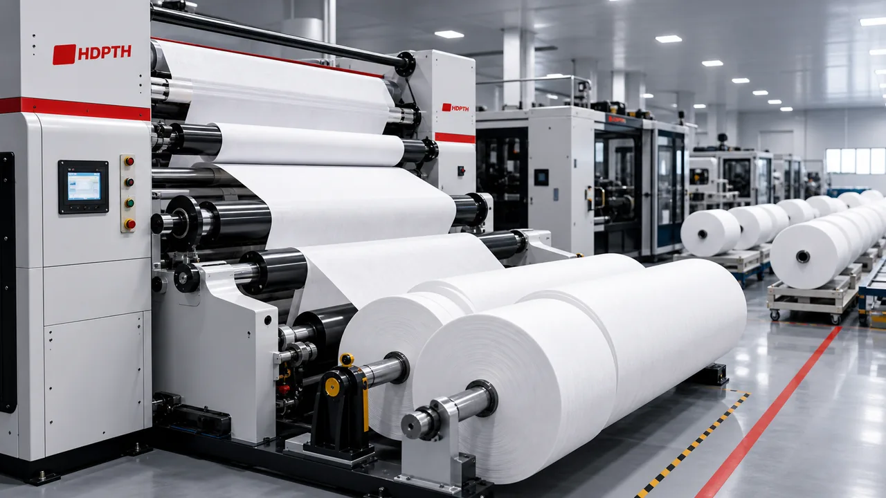

1Nonwoven Wipes
ANDRITZ Wins Another Dalian Ruiguang Flushable Wipes Line Order

What happened
ANDRITZ said on May 20, 2026 that Dalian Ruiguang in China ordered another Wetlace line for premium flushable wipes roll goods. The line is scheduled to start up at the end of 2026.
Capacity impact
ANDRITZ said the new line will lift Dalian Ruiguang's total annual production capacity to 40,000 tons. The company said the wipes material is pulp-based, biodegradable, and designed to meet IWSFG and JIS P 4501 flushability requirements.
Why it matters
This is a direct signal that investment in sustainable hygiene substrates remains active in China. For machinery suppliers and converters, the order shows continued demand for flushable wipe materials that can meet tighter performance and compliance standards.